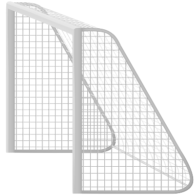
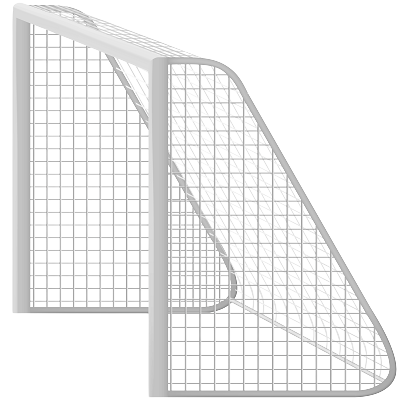
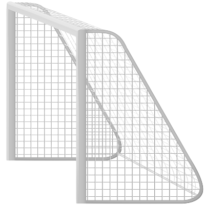

Fudbal (engl. football, od engl. foot) — „stopalo“ i ball — „lopta“) ili nogomet, kolektivni je sport koji se igra između dve ekipe, sastavljene od po jedanaest igrača.
Fudbal je trenutno najpopularniji sport na svetu. Igra se u preko 200 zemalja.
Mogu ga igrati ljudi svih godišta i muškarci i žene. Često se o fudbalu govori kao o „najvažnijoj sporednoj stvari na svetu“.
Igra se fudbalskom loptom na pravougaonom igralištu s prirodnom ili veštačkom travom.
Golovi su smešteni jedan nasuprot drugom na kraju uže strane igrališta.
Cilj igre je ubaciti loptu u protivnički gol bilo kojim delom tela osim rukom.
Jedino golman može u ograničenom prostoru, takozvanom kaznenom prostoru, igrati rukom.
Pobednik utakmice je ekipa koja na kraju utakmice postigne više golova (pogodaka).
Fudbal je dinamična sportska igra. Lopta je u igri sve vreme osim kada sudija zaustavi igru zbog njenog izlaska izvan granica igrališta ili nekog prekšaja u terenu. Nakon zaustavljanja, igra se nastavlja prema pravilima. U profesionalnim ligama, na utakmici je najčešći rezultat od najviše 3 gola. Na primer, u Premijer ligi u sezoni 2005/06, prosek golova po utakmici bio je 2,48. Golovi se postižu iz igre i iz kaznenih udaraca. Kazneni udarci su penali ako je prekržaj načinjen u obeleženom kaznenom prostoru, udanjenom 16 m od gola. Prekršaji, van toga prostora, se sankcionišu sa slobodnim udarcima. Fudbalska utakmica se ne može igrati bez golmana i kapitena. U pravilima fudbala, samo golman ima određenu ulogu. Svi ostali igrači mogu igrati na bilo kojem mestu na terenu. U modernom fudbalu, postoje, osim golmana, još tri osnovne pozicije:
Po pravilima postoje dva osnovna dela igre: lopta u igri i lopta van igre. Sve vreme od početnog udarca pa do kraja poluvremena, osim kada lopta izađe van granica igrališta ili sudija zaustavi igru, lopta je u igri. Kada lopta nije u igri, ona se vraća na jedan od osam sledećih načina:
Najviše i najuticajnije fudbalsko telo je FIFA. Osim fudbala koji je najpoznatiji, FIFA je takođe nadležna za razvoj futsala i fudbala na pesku. Sedište FIFA-e je u Cirihu, u Švajcarskoj. Postoji šest regionalnih konfederacija koje su u savezu sa FIFA-om:
